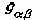

Five of the most important and useful theoretical models in the study of geography are, in historical order: the Von Thunen model of agricultural land use; Weber's model of industrial location; Walter Christaller's central place formulation; the gravity model of spatial interaction; and Hagerstrand's model of the geographical spread of innovation. All of these models are of fundamental importance in understanding the world around us. They also have in common the fact that they simplify reality by invoking an isotropic geographic space. Of course they do this to varying degree, and some then relax this assumption. Most of them are also computationally explicit models, again to varying degrees. Both of these aspects of the models are the subject of my discussion.
Current Geographic Information Systems have the potential of overcoming the isotropic plane assumption, even though the elegant pedagogic simplicity of models using this assumption will always obtain. Consider first the Von Thunen model. Here agricultural land use patterns are derived as a function of market price, transport cost to market, and agricultural production costs. Under the isotropic assumption, and a single market, the geographic arrangment of crops and land uses takes the concentric form. Years ago, for an Economic Geography class near Detroit, I wrote a simple computer program to demonstrate this, with five commodities, including strawberries, wheat, other foodstuffs, and Cadillacs. Given the other inputs I could demonstrate computer printouts of circularly arranged optimal land uses, and could even run the program with multiple market places to get mixtures of partially concentric patterns, and could include a climatic gradient to get non-circular patterns. All this was done off-line, in a batch environment (circa 1965). My computer program could not incorporate positional variations in transportation cost, even though Von Thunen himself gave such a demonstration introducing a river into the geographic space (Figure I).
Several GISs can now provide more realistic calculations. One of our graduate students, R. Dodson, has implemented the Von Thunen model within the IDRISI system, and has done some work on an implementation of the Weber model. This system allows variable transportation costs to be included. However he still uses synthetic landscapes. But this need not be the case. To see how this can be improved upon, I would like to contrast the situation with a popular computer pastime. What I have in mind is the "Flight Simulator" in which one can pretend to be an airplane pilot. The geographically interesting part is that one can purchase a variety of landscapes, and "fly" around these. Each of these "landscapes" or airport vicinities, can be purchased separately. Imagine having the same thing for the USA, or the world, and running Von Thunen, Weber, Christaller, or Hagerstand models on real landscapes. For, say $20, you might purchase "The Los Angeles Region" as a backdrop for your "spread of AIDS" model, or whatever model excites you. I envision the day when we can purchase alternate geographic landscapes for such geographical simulations. These would contain real geographic data (soils, transportation, population, etc., depending on the class of model), for a particular place, region, nation, or continent (or even time period). Indeed, I propose that we consider the development of such a library of modules. The trend is clearly in this direction, and a few prototypes already exist, the Digital Elevation Models and Digital Line Graphs of the US Geological Survey, and the TIGER files of the US Bureau of the Census being two primitive (but useful) examples of proto-modules.
A common element in many geographic models is the assumption of Euclidean distance; this is generally the basic postulate of the isotropic plane. How can a model such as that of Christaller relating central places be adapted to fit the highlands of some country in a pre-automobile time? Can it be modified to take into account todays of complex transportation systems which distort topological and metrical realtions? Current Geographic Information Systems indeed enable one, given a transportation disutility on a particular class of land, to calculate more realistic time- or cost-distances between places. I find this particularly exciting and have worked out a simple example for walking in variable terrain using the hiking function (Figure II) estimated from empirical data given by Imhof (1950, pp 217-220).
In order to use this function one simply calculates the slope of the terrain, and then converts this to a walking velocity. It is easiest to do if the terrain is given in the form of a geographic "matrix", with elevations at equally spaced increments in two directions (Figure III).
Then one can compute, from any inital point, the minimum time path to all other places (Figure IVa). Connecting places at equal time-distances yields isochronic lines, or "geographic circles" (Figure IVb). Putting in the gradients to this contour map then yields two sets of orthogonal lines (Figure IVc), isomorphic with
Gauss' geodesic polar coordinates for which the metric takes on a particularly simple form. Now it would make sense to reformulate Christaller's central place model in terms of a general Gaussian metric (of the form ). Unfortunately transportation facilities with modern railroads, highways, and airplanes introduce topological complexities which are not easily treated within the framework of continuous Gaussian manifolds. This is because real geographic circles have holes and disjoint pieces (Figure V; Tobler 1961). Geographic Information Systems with these capabilities generally are forced to use network models.
The computablity of the theoretical models also raises a pedagogic issue. Current Geographic Information Systems seem to appear in three contexts. One use is in applied fields; the bureaucratic inventorying of natural resources or facilities management. A second use is in research, where specific problems are under investigation. Here attempts are now being made to incorporate various sorts of additional spatial analysis capabilities into GIS's. The third appearance of GIS's is in courses on GIS. What is missing is their appearance in substantive geography courses such as Historical Geography, Political Geography, Economic Geography, Cultural Geography, Physical Geography, Regional Geography of Country X or area Y. Now imagine some future date when all of these courses are lab courses, or have a laboratory associated with them, as most physical geography courses (and some others) already have. As I see it this lab might be a computational GIS lab. The point is to bring the GIS into the substantive courses (not only in geography), and not to leave it in an isolated GIS techniques course. I recently taught a course on human migration and made one of the hours into a set of computational exercises. Professor Golledge has been using SimCity in a similar manner in his course on Urban Geography. Going somewhat further, imagine that all social science courses might come with a computer lab some day in the future. Not just for word processing, but real Computational Social Science. There is a clear tendency in that direction which needs to be encouraged.
Presented at the NCGIA sponsored conference on Geographic Information Systems in the Social Sciences, Santa Barbara, Feb. 1991
Consider the set of all places on the surface of the earth which you could reach within one hour of where you are now. The outer edge of this set forms a geographical 'circle' of one hour radius. Francis Galton introduced the term isochrone for such a circle in the 1880's, but the word (in a somewhat different context) was probably already used by Snellius or Bernoulli.
What a curious circle it is! Its circumference is hardly 2*pi*r, its area, in square hours, is not pi*r^2. The circle most probably has holes in it, and probably consists of disjoint pieces when shown on an ordinary geographical map. The shape of this circle depends on the place and time of day at which you start your journey. Our daily environment, as a geometry, seems more complicated than the Riemannian geometry envisaged by Einstein, at least as far as map images on the earth are concerned. A resident of Paris will have a geographical circle of one hour radius with a different circumference, shape, and area from that of a person in Los Angeles. This is a bit like the geometry on the surface of a cucumber; here a circle at the narrow end will differ from one near the middle. A familiarity with non Euclidean geometry renders this quite understandable. Next, try drawing concentric circles on a potato from some starting point. Now put in the orthogonal trajectories to these circles. Then note the similarity to Gaussian polar geodesic coordinates. This is usually obscured because the radial geodesics are usually not drawn on geographical isochronic maps. The map of travel times from central Dallas is typical.
The analogy to non Euclidean spaces clearly suggests that one try to model at least a part of our travel time geometry as a two manifold of variable curvature.
To this end I have assembled several tables, of which the following is a short selection:
In each instance the location names (i.e., latitude and longitude) of the places are available.
I would now like to model these relationships with an equation of the form (summation convention):
from which the Gaussian curvature, geodesic curvature, etc., might be calculated. A difficulty is that this metric tensor is derived assuming that Euclidean geometry holds in the small, that is, for very short distances. In geographic space this assumption is often not satisfied, as noted again below.
A cartographic application might be that one could make polar geodesic maps centered on any place. More practical usefulness would be obtained if one could directly compute the travel costs (times) between places knowing only their latitude and longitude, the mode of transportation, and the time of day. This would be like the computation of spheroidal distances from geodetic coordinates - the sort of thing one does on a hand calculator nowadays. This would require the storage of the  coefficients. If these coefficients could not be approximated by simple formulae, which is likely, then it might be just as easy to do a lookup in a large transport cost (time) table, in effect storing something like the Official Airline Guide in a small computer. This is probably what will happen, and road maps stored in hand calculators are not far off.
Still, there are some advantages to the theoretical notion. By calculating the Gaussian curvature the amount of geographic change induced by a freeway in an environment might be estimated. This could be one way of computing the impact of the road. If a freeway introduces changes in travel time, and one contemplates showing this change as a warped map, then Tissot's indicatrix provides a measure of the geometric change. Tissot's work is most generally used to measure the amount of distortion on geographical map projections, and can be computed for any point of a map. In this novel application the linear, angular, and areal distorting consequences of a change in a transport system could be calculated. Formal integration of Tissot's measures (which are local in the sense of calculus) over the entire affected region gives a measure of the total effect. It is interesting to note that the impacts include angular displacements as well as the linear and areal ones which one would expect. One also expects these impacts to decline with distance from the locus of accessibility change. Tissot's indicatrix is related to the strain tensor as used in mechanics and, and to the metric tensor of differential geometry.
There are some empirical problems introduced by these ideas, namely:

The movement of people, of ideas, of technology, of disease, or of money, use complex and intricate transportation systems. These distort our globe in profound ways. One can get from Los Angeles to Chicago, to New York City, or to Washington, D.C., quicker than one can get to Arcata in Northern California. The airfare from Santa Barbara to Sacramento is 107% of that from Los Angeles to New York City. By this measure Columbus, Ohio, today is 151% as far from Los Angeles as is New York, and Madison, Wisconsin, is 219% further from San Francisco than is Milwaukee. Only a few minutes with an airline fare schedule will yield many such examples. Relations on our earth are certainly shrinking, but they are also becoming more warped, turned inside out, and distorted almost beyond imagination. Because of this Bunge has proposed that we use more realistic globes, with maps printed on balloons in which well connected places are constrained by interior strings before inflation. The resulting indentations and bulges after inflation come closer to the realities of current geography than do commercially available globes. In this presentation I have tried to capture aspects of this new geography in terms of geometry, and it is almost possible to believe that Euclidean geometry could not be invented by a careful observer today. Of course the world was complicated in terms of transportation even in Euclid's day. The major modern changes, aside from speed, being limited access air travel, railroads, highways, and electronic communication networks. These distort the simple topology of our sphere-like earth.
We now have available several books on spatial analysis {Anselin 1988; Arbia 1989; Cressie 1991; Haining 1990; Gaile & Willmott 1981; Griffith 1988, 1990; Ripley 1981, 1990; Unwin 1981, Upton & Fingleton 1985}. This is most encouraging, but is it not strange that almost none of these works considers that the earth is homeomorphic to a sphere? The term sphere does not even occur in the index in most of these books. This is also true of older books like {Berry & Marble 1968, and Bennett 1979}. A similar criticism applies to all the books published in the last two decades under titles similar to "Statistics for Geographers", or "Statistical Geography", etc. This seems a most curious omission. The same comment seems to apply to the (literally) hundreds of "Geographical Information Systems" (GIS's). The one exception, explicitly designed to consider the spheroidal earth, is the "Hipparchus" system developed by Hrvoje Lukatela of Calgary, Alberta {Lukatela 1987}. One other system, GIS-Plus, uses latitude and longitude for its coordinate system. Most GISs can convert from latitude and longitude to map projections but do not treat the spherical units as their primary referencing system. And, although there has been a continued plea for more analysis capability, most of the current GIS's do not claim to be "Geographical Analysis Systems" (GAS's). Facilitation of analysis is the thrust of the current NCGIA initiative and I argue that this should be extended to include analysis of global distributions.
The inference that I make from my observation is that the greatest demand is for parochial, local studies and not for global analysis. This is inconsistent with the increased interest in global problems, especially as they relate to the global environment, terrestrial warming, ozone depletion, and so on, and even to global economic relations. How can this "flat earth" syndrome be overcome and round earth thinking be brought into the textbooks, mainstream research papers and monographs, and GIS's or GAS's? Much blame must be put on the teaching of Euclidean geometry in the elementary schools instead of the more natural earth oriented Riemann (elliptical) geometry. It is probably hopeless to attempt to change this. Should everyone know that the circumference of a circle increases as two pi times the sine of the radius, (which means it eventually goes to zero), and that the area of a circle increases in proportion to the square of the sine of one half of the circular radius? Or that the circumference of a circle on the surface of an ellipsoid depends not only on the circle's radius but also on where one puts the center {Blaschke 1949}? No one seems to teach analytic geometry on the sphere; the most recent book which I have found is nearly 100 years old {Heger 1908}. Knowing these sorts of things would make it much easier to understand the complexities of "geographical circles", the set of all places attainable within a given number of hours (or dollars). These circles have a circumference bounded by isochrones (isotims), the radii are time geodesics, and the circles' shape depends on where, and when, one begins to travel. These circles often have disjoint pieces, or holes, on the surface of the earth due to air travel. Thus transportation systems induce a geometry even more complicated than that of a sphere or ellipsoid.
The only fields in which global analysis routinely appears are geodesy, meteorology, and oceanography, collectively sometimes known as geophysics {Moritz 1980}. Geologists today increasingly invoke spherical ideas, especially since the development of the theory of continental drift, and a statistican occasionally wanders into this domain {Mardia 1972, Watson 1983}. Thus I can cite recent books such as that of {Fischer, et al. 1987, Washington & Parkinson 1986}, and {Daley 1991}, and older ones {e.g., Chapman & Bartels 1940} that consider the geometric nature of the earth. Generally these works are subject specific and specialized. Still they provide a starting place.
If one were to develop a course of studies introducing analysis on the earth, treated spherical, what should the class of problems to be treated cover? One approach is to take the standard statistics book and redo the problems on a sphere. The surface of the earth is topologically spherical, even with bumps like the Matterhorn; it is a two dimensional manifold lacking an edge, but with some discontinuities and unsmooth derivatives, and is perhaps even fractal-like if we don't look too closely. The boundaries above and below are of no concern so that one is immediately into two dimensional spatial statistics (which, as Bill Bunge would remind us, neglects the danger from intercontinental missiles). First, of course, come the two dimensional descriptive statistics, frequency histograms, density functions, means, variances, binomials, normals, transformations, etc., all on the spherical surface. About the only idea from this set that one routinely encounters is the population center of the United States and how it moves from census to census. Even the few papers on centrography generally only consider planar values. Then it perhaps gets more interesting. Scatter diagrams and correlation between observations given by latitude and longitude. We need to know how to rotate to principal axes, a pair of orthogonal great circles (factor analysis on a sphere would need this). Or fit a "straight line", which now becomes an arc of a great circle through a set of point locations; that is, find the pole of this great circle on the sphere. Or does a spherical quadratic (small circle, parabola, or hyperbola), cubic, quartic, or quintic fit better? Or a loxodrome, or some other transcendental curve? Or a nice spline, or a weighted nonparametric smooth curve? Here we have some types of questions addressed in {Fisher et al. 1987}. Is this interesting? Do we need spherical markerboards for the classroom demonstrations? Now move on to the analysis of spherical point patterns in the style of planar analysis {Diggle 1983, Getis and Boots 1978}. A fleeting reference to Voronoi polygons on the sphere is found in (Okabe, et al. 1992). Quadrat analysis must obviously be modified to become quadrilateral analysis. Or one can map the surface of the earth into an equal area planar square {Tobler & Chen 1986} thereby distorting angles and distances, or a conformal square {Peirce 1879} to distort areas and distances. In geology the equal area Schmidt net (known to geographers as Lambert's {1772} azimuthal equal area map projection) and the stereographic projection are often used. Spatial sampling takes a different form on spheres {Giacaglia & Lundquist 1972; White, Kimerling & Overton 1992}. If we have some variable discovered or measured at point (i.e., latitude and longitude) locations we are led, inter alia, to interpolation questions long studied in meteorology under the name of "objective analysis" {Gandin 1963; Bengtsson et al. 1981; Thiebaux & Pedder 1987}, or "spatial analysis" {Daley 1991, p. 30}, or as "collocation" in geodesy {Moritz & Suenkel 1978}, and recently popularized in geology and ecology as "Kriging". Most of this work is Euclidean and planar but interpolation and contouring on a sphere has not been completely neglected {Lawson 1984a, 1984b; Renka 1984; Diggle & Fisher 1985; Willmott et al 1985} and the problem has also been approached using spherical splines {Wahba 1981; Dierckx 1984; Hobbs 1985}. To simplify a global distribution we can do a form of trend analysis or spatial filtering on the sphere, using spherical harmonics as the basis functions {Neumann 1838; Prey 1922; Haurwitz & Craig 1952; Jones & Gallet 1962; Heiskanen & Moritz 1967; Balmino et al. 1973; Barraclough 1978; Colombo 1981; Tobler 1992}. Then it is also natural to ask whether the data are auto-correlated, or cross-correlated with another variable on the earth. For analysis purposes this leads to the computation of a spectrum, and the spectra of two spherical arrangements can be used to measure their degree of relatedness through the cross spectrum {Kaula 1967; Rayner 1971; Swarztrauber 1979}.
The usual distinctions can still be made. Some observations are measured on a nominal scale, some are ordinal, some interval and some are ratio variables. The analyses can be parametric or nonparametric, confirmatory or exploratory (leading to EGAS's?). The bulk of the geophysical literature treats all phenomena as fields. This means that they exist everywhere, in space and time. Usually they consist of ratio variables that are at least piecewise continuous and differentiable. A few odd things occur such as the piecewise continuous Ocean Function; it takes on the value one where the surface of the earth is ocean, zero elsewhere {Munk & MacDonald 1960; Lambeck 1988}. In most of the literature the prototypical variable is a scalar; a single number (having magnitude only) at each location. The two dimensional topographic surface, measured as a departure from a datum, or a barometric pressure surface, are simple examples. Beyond this are the time varying vector fields (with magnitude and direction) such as wind, or components of terrestrial magnetism. Occasionally a field variable is a tensor; for example a matrix of strain coefficients at each point. Another example is an anisotropic velocity surface in which a propagation velocity at a point can differ depending on whether movement is to the north or to the south across the point, or to the east or to the west or to the northwest, etc. In other words the traversing speed at every point depends on the direction moved at that point. A simple instance is a freeway in which the speed along the path differs drastically from that in the perpendicular direction (across the road). In the world of Geographic Information Systems the field variables seem to appear as rasters, with each component of a multicomponent system considered a sample on a regular tesselation, and then stored as a "layer". This often works well but I imagine it causes difficulty when one wants to convert to a different naming convention such as converting from rectangular to polar coordinates, or (on a sphere), converting to an oblique pole. In such a case a vector field does not change at all, but all of the components take on new numerical values. This means changing the values in all the layers.
From a different point of view one can analyze point patterns on a sphere, or line patterns, or networks, or area patterns, etc. These distinctions are made in Geographic Information Systems, but geographic analysts face problems that are different from those that occur in geophysics. For example the Gross National Product (GNP) is a variable defined as a spatial aggregate having meaning only for nation states. Should it be assigned as a density to all the locations to which it applies, or should it be assigned to a point location? The first option is probably preferable since it can then be treated as a piecewise continuous scalar. Or is it a set variable requiring a new way of thinking? Rates (of disease incidence for example) involve comparable problems. Similarly, foreign trade data fit into a country by country table applicable to the entire world, and as such are not representable as a simple scalar. More complex analyses are required for such data than are necessary for the simpler scalar, vector or tensor representable phenomena. And then there is the ill-defined problem of modifiable areal units, and the problem of data conversion between such units {Tobler 1990}. For this problem it should be relatively simple to rewrite the pycnophylactic interpolation algorithm {Tobler 1979} in a spherical form. Many classical geographical models relating to interaction, diffusion {Hagerstrand 1967}, migration {Dorigo and Tobler 1983}, and location also ought to be rewritten in this spherical manner. If we look beyond statistics to include modeling then our pedagogic work ought to include the two dimensional spherical variants of classical analysis: analytic geometry, trigonometry, vector analysis, calculus {Osserman 1977}, partial differential (especially the diffusion and the wave) equations, finite differences, networks, transition matrices, etc. all on the surface of a sphere (or ellipsoid). As discussed elsewhere {Tobler 1991} we really wish to use the computer systems (GISs) as backdrops upon which to run simulations or analytical models.
The usual flat earth treatment assumes only a small portion of the sphere. Small enough that so that earth curvature can be neglected. Then one uses flat maps on a projection chosen so that the error is not appreciable. One can teach people how to compensate for map projection errors {Maling 1988}, but it seems easier just to forget about working on maps. Instead, use map projections in the Transform - Solve - Invert paradigm {Kao 1967; Eves 1980}. For example, in problems dealing with great circles it makes sense to convert from latitude and longitude to gnomonic projection coordinates, solve the problem in these most - natural - for - the - problem coordinates, and then go back to latitude and longitude or to a different projection for another part of the problem or, e.g., for display purposes to the orthographic projection. The map on the gnomonic projection never needs to be seen. Mercator's projection can be used similarly when dealing with angles in a small area, and the stereographic projection is used in meteorology because it leaves the Laplacian invariant. The associated Legendre functions used as the orthonormal basis for the latitudinal variation in a spherical harmonic expansion make implicit use of Lambert's equal area cylindrical map projection in this same way {Lambert 1772; Hobson 1931}. A greater facility with spherical geometry might confine some explicit uses of projections to these sorts of analytical transformations. Certainly the computation facilities for this are now available. Visual displays are of course extremely important to all analytical investigations, especially exploratory ones, and map projections are still useful for this purpose. Clearly there is a need to extend GISs to deal with and display spherical data, i.e., we must have an Exploratory Global Analysis and Display System (EGADS). For the output of geographical studies the systems must be capable of producing maps of the whole world.